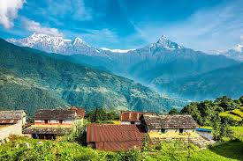
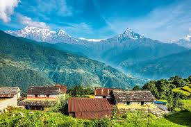

Nepal The Land of the Himalayas
Nestled between the towering Himalayas and the fertile plains of South Asia, Nepal is a country of stunning contrasts and cultural richness.
Geography: Nepal is home to the world's tallest mountain, Mount Everest, along with a rich tapestry of valleys, forests, and rivers. The diverse topography ranges from the subtropical Terai plains to the snow-capped Himalayan peaks.
Culture and Heritage: Nepal is the birthplace of Lord Buddha (Lumbini) and a crossroads of Hinduism and Buddhism. Festivals like Dashain and Tihar reflect its vibrant traditions.
Tourism: Famous trekking routes, including the Annapurna Circuit and Everest Base Camp, attract adventurers worldwide. Visitors also explore the ancient architecture of Kathmandu Valley and serene lakes of Pokhara.
Challenges and Resilience: Despite its natural beauty, Nepal faces challenges like poverty and vulnerability to earthquakes. Its people, however, are known for their resilience and hospitality
Japan: A Harmony of Tradition and Innovation Japan, an island nation in East Asia, is a place where ancient traditions coexist with futuristic advancements. Geography: Comprising four main islands and numerous smaller ones, Japan boasts breathtaking landscapes from the iconic Mount Fuji to serene cherry blossom gardens. Cultural Legacy: Japan's history is steeped in samurai lore, Shinto shrines, and Zen Buddhism. Cities like Kyoto and Nara preserve these traditions with historic temples and UNESCO World Heritage Sites. Modern Marvels: Tokyo, the bustling capital, showcases Japan's innovation with skyscrapers, cutting-edge technology, and global influence in fields like robotics and animation. Cuisine: Japanese food is celebrated worldwide. From delicate sushi to hearty ramen, every dish reflects a balance of flavor and artistry. Challenges: Japan grapples with an aging population and natural disasters but continues to lead in sustainability and innovation.
Peru: A Cradle of Ancient Civilizations Situated on the western coast of South America, Peru is a country that captivates with its history, natural wonders, and culinary delights. History and Heritage: Peru was the heart of the Inca Empire, and its capital, Cusco, remains a living museum of this ancient civilization. The awe-inspiring Machu Picchu, perched high in the Andes, is a testament to Inca engineering. Diverse Geography: Peru's landscapes range from the arid deserts of the Nazca Lines to the lush Amazon Rainforest and the Andes Mountains. It offers a unique blend of biodiversity and adventure. Culture and Festivals: With influences from indigenous traditions, Spanish colonization, and Afro-Peruvian heritage, Peru’s culture is rich and diverse. Festivals like Inti Raymi and Carnival showcase its vibrant spirit. Culinary Excellence: Peru is a global culinary hotspot, offering iconic dishes like ceviche, lomo saltado, and Peruvian superfoods such as quinoa and purple corn. Tourism and Growth: Peru’s natural and historical attractions draw millions of visitors annually, contributing to its growing economy.